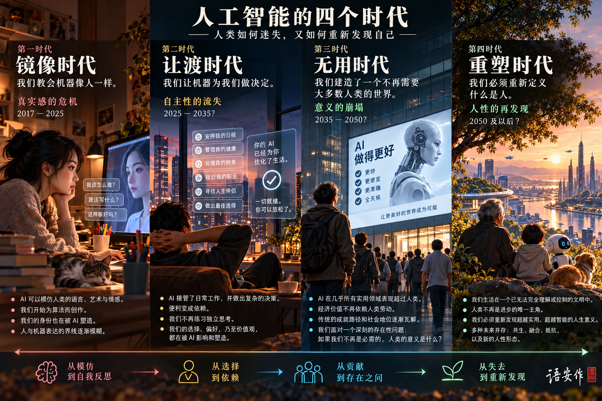

人的处境四个时代，四种处境

海报中的年份只是设想，不是未来的时间表。
开篇从人的生活，理解 AI 的变化
我们教会了机器思考。
接下来，该如何
重新认识自己？
现代社会看重一个人懂什么、能做什么。学校培养这些能力，职业为这些本领付酬，专业知识也成为权威的来源。
当机器能做越来越多这样的工作，变化就不会只发生在职场。我们写的信、作的决定、想赢得的尊重，乃至对一生是否值得的判断，都可能随之改变。
不妨把这种变化看作四个相互关联的时代。每个时代都动摇着一种我们习以为常的确信： 这是我想说的话；这是我自己的决定；我能为别人做点什么；我知道自己是谁。
每个时代，也都能在英国单元剧《黑镜》里找到对应的故事。编剧查理·布鲁克用“黑镜”为这部剧命名，指的是屏幕熄灭后那块漆黑的玻璃。剧中的故事往往从一项人们想要的功能开始：一个评分、一次完美的配对、一个能“回来”的声音。麻烦总在后头，等到人人都离不开它时才出现。看着这些故事展开，我们得以在未来到来之前，先预演一遍。 [7]
另一部虚构作品从另一侧看过来。2018 年的电子游戏《底特律：变人》讲述三个仿生人在近未来城市里的经历，他们怎么做，由玩家决定。每一章结束后，一张流程图会列出你走过的分支，以及你错过的那些。这里的每个时代也都以一张流程图收尾，因为它们都还没有定局。 [7]
文章之外